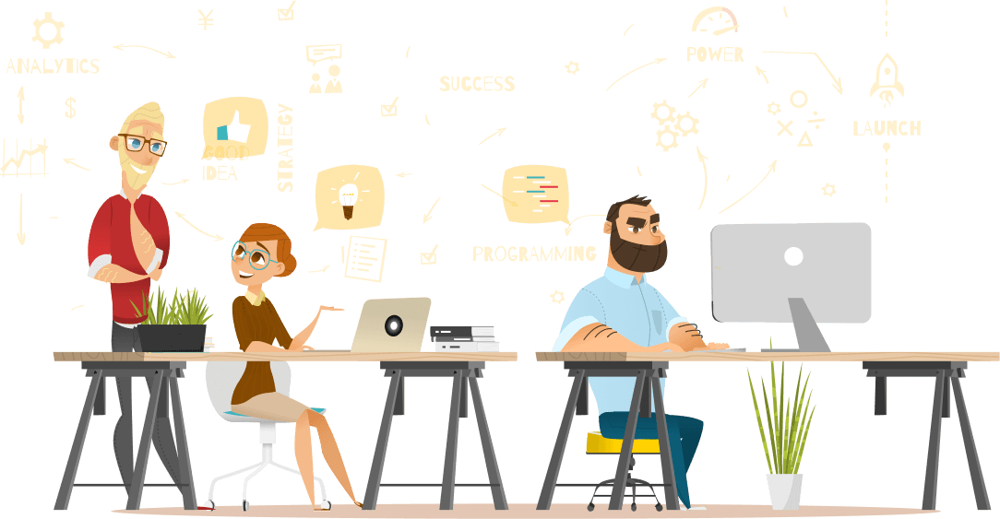
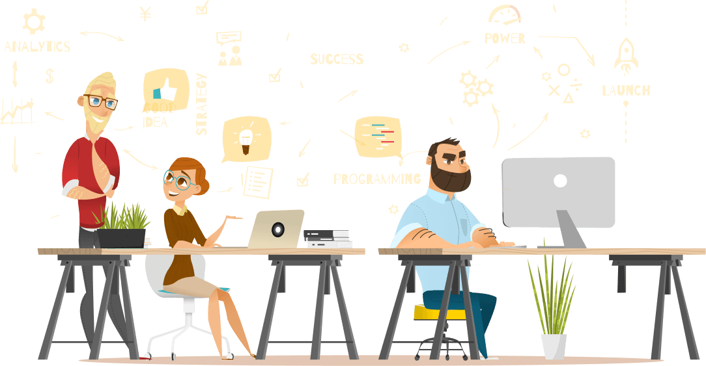

Creativity starts with viewing the whole world differently
A service agency with customer satisfaction

A service agency with customer satisfaction
The 2019 Innovation by Design Awards honor the designers and businesses solving the problems of today and tomorrow. It is one of the most sought-after design...
Well for one, people are very visual in nature. Without giving it much thought, the vast majority of your readers are going to instantly make judgements about your blog the second they land on it.
Transition seamlessly between frontend and backend development, adapting Wix-made or third-party APIs per client with your code. Work in the environment that suits you.